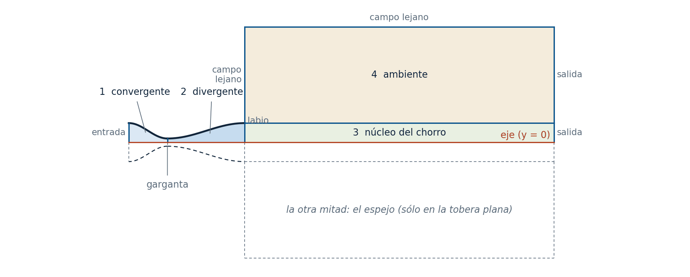
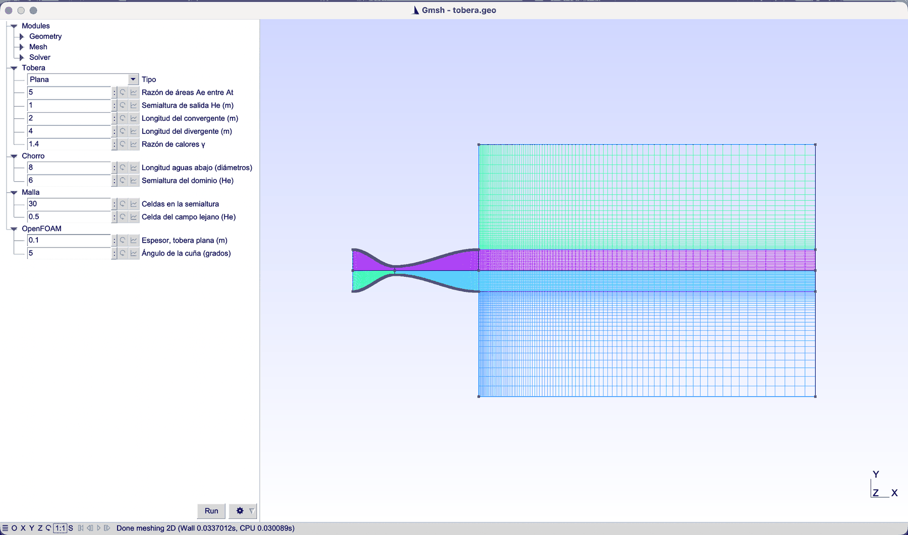
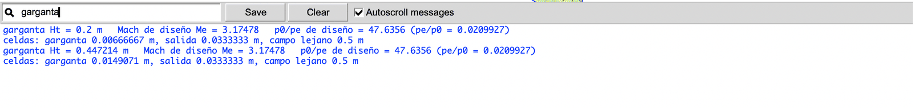
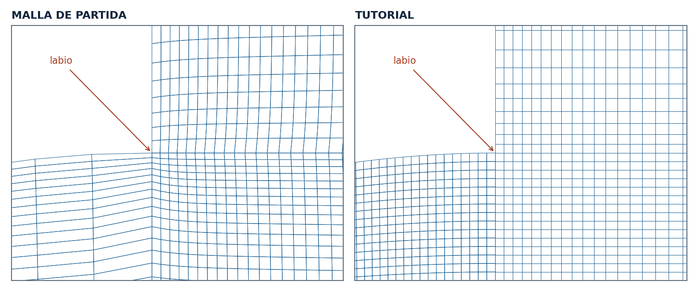
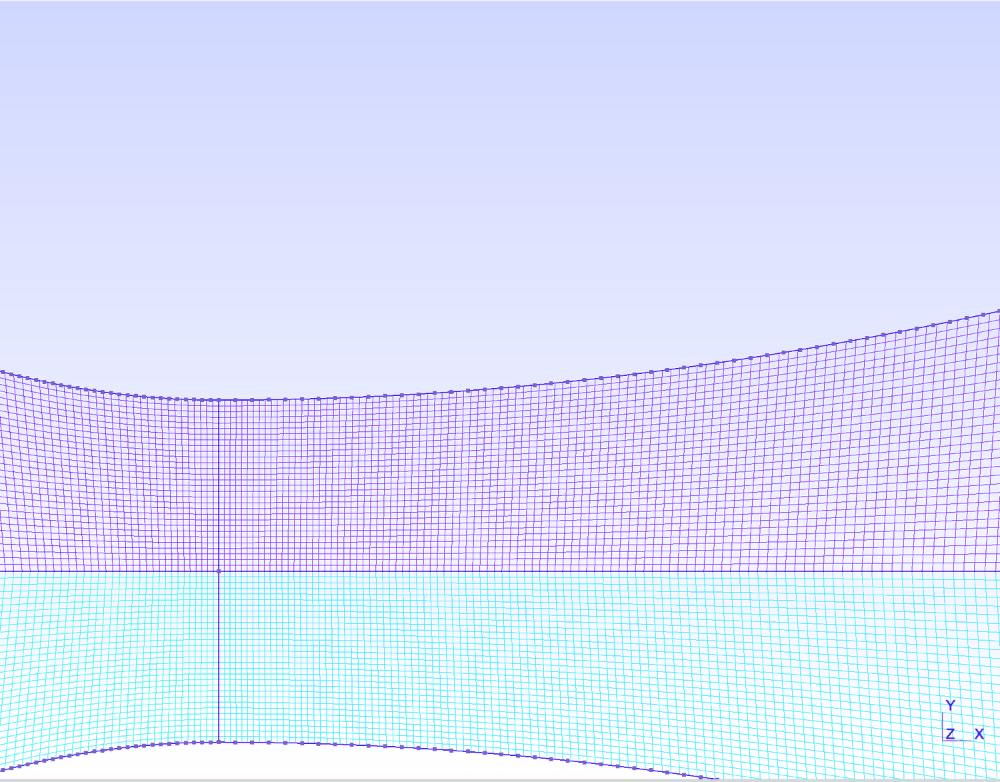
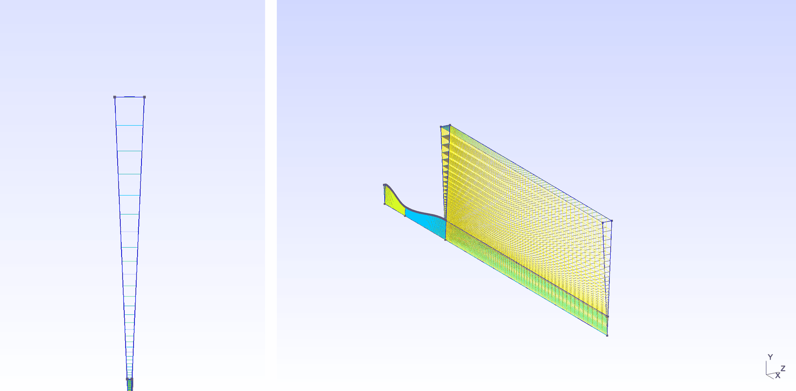
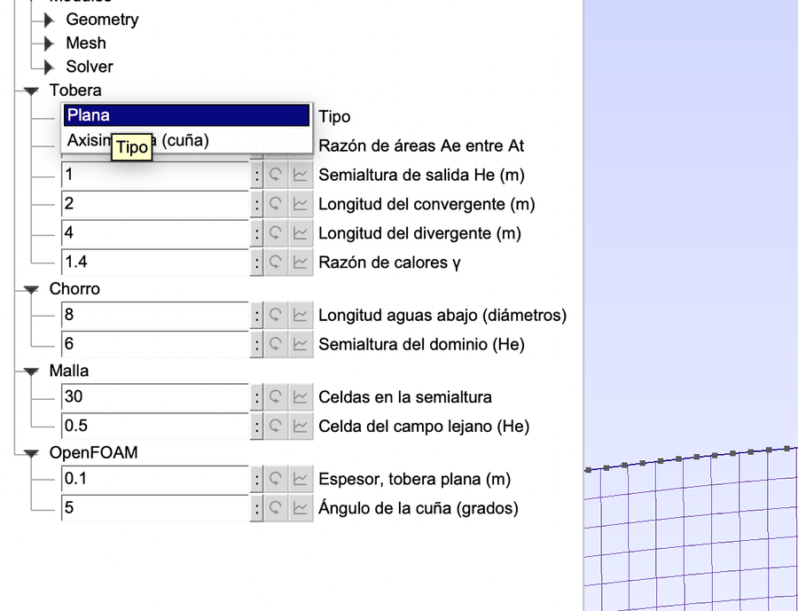
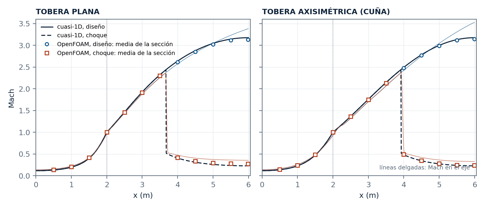
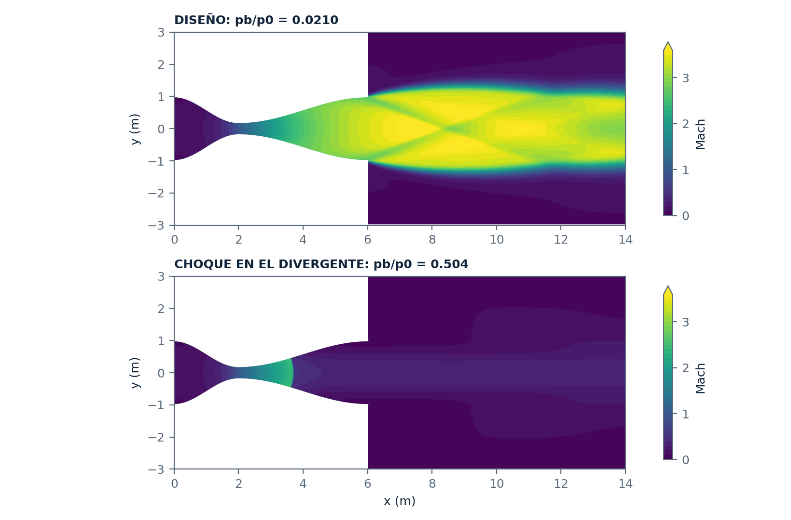

The Parametric Nozzle: Planar, with the Jet, and as a Wedge
A professor's nozzle file, rebuilt: half a nozzle, meshed once, becomes the planar nozzle with its mirror or the axisymmetric one when rotated into a wedge. The file computes the throat and the design Mach number from the area ratio, and an Euler run in OpenFOAM checks the Mach number against the theory.
Gmsh · Tutorial 2.3.2
La tobera parametrizada: plana, con el chorro, y en cuña
Una tobera escrita por un profesor, reconstruida: media tobera, mallada una vez, es la plana con su espejo o la axisimétrica al girarla en una cuña. El archivo calcula la garganta y el Mach de diseño a partir de la razón de áreas, y un cálculo de Euler en OpenFOAM comprueba el Mach contra la teoría.
Gmsh · Tutorial 2.3.2
Die parametrische Laval-Düse: eben, mit dem Strahl, und als Keil
Die Düsendatei eines Dozenten, neu aufgebaut: eine halbe Düse, einmal vernetzt, wird mit ihrem Spiegelbild zur ebenen Düse oder, zu einem Keil gedreht, zur achsensymmetrischen. Die Datei berechnet Hals und Auslegungs-Machzahl aus dem Flächenverhältnis; eine Euler-Rechnung in OpenFOAM prüft die Machzahl gegen die Theorie.
Estimated reading: 45 minLectura estimada: 45 minLesedauer: ca. 45 minLevel: undergraduateNivel: licenciaturaNiveau: BachelorVerified on Gmsh 4.15.2 and OpenFOAM 13Verificado en Gmsh 4.15.2 y OpenFOAM 13Geprüft mit Gmsh 4.15.2 und OpenFOAM 13
Full English translation in preparation. Each section below carries a summary of its content; the complete text, figures and tables are available in the Spanish version, which the ES button above selects.
Build a converging-diverging nozzle with its exhaust region from half a nozzle; compute the throat and the design Mach number from the area ratio; match cell sizes at the throat and the exit; obtain the planar mesh by writing the mirror half and the axisymmetric mesh by rotating the half into a wedge; check both with an inviscid OpenFOAM run against quasi-one-dimensional theory.
The idea
Half a nozzle, meshed once
Between the axis and the wall, the planar and the axisymmetric nozzle have the same shape; only the area differs (proportional to the half-height or to the radius squared). The same area ratio therefore asks for different throats.
Recipe
From the file to the two meshes in six steps
Six steps, from the parameters to the two meshes.
Step 1
The panel, the throat and the design Mach number
DefineConstant with a drop-down list for the nozzle type; the design Mach number is found by bisection on the supersonic branch of the area-Mach relation.
Step 2
Square cells at the throat and at the exit
Square cells at the throat, the inlet and the exit, and the Empalme macro of tutorial 2.2.2 for every progression; no size jump at the exit.
Step 3
A cosine contour, and how many points it needs
A cosine contour through 200 evenly spaced points: a Spline leaves each end with the slope of its first chord, and Transfinite follows the parametrisation, so clustered points break the requested progression.
Step 4
Four blocks, written once for each half
Four blocks per half; the lower half is written again with the sign of y reversed, because Symmetry with Duplicata does not copy Transfinite and Recombine.
Step 5
One layer, or a rotation of five degrees
Planar: one layer. Axisymmetric: rotate the half by minus half the wedge angle and extrude by rotation; the axis faces vanish and the cells next to the axis become prisms. Physical groups by bounding box.
Step 6
Changing the nozzle from the interface and from the terminal
The panel, the message console and -setnumber.
Worked example
The wedge, predicted by hand
The axisymmetric nozzle computed by hand: throat, design Mach number, throat cell, nodes of the diverging part and total cells, compared with what the file prints.
OpenFOAM check
Does the Mach number follow the area?
Inviscid shockFluid runs at the design pressure ratio and with a normal shock in the diverging part; the mass-averaged Mach number of each section follows quasi-one-dimensional theory.
The starting mesh
What changed, measured
The starting mesh: smoothing on transfinite blocks, size jumps at the throat and the exit, a five-point spline with a false throat, and an MSH 4.1 file that gmshToFoam cannot read.
File
tobera.geo, complete
The whole file.
Suggested practice
Three nozzles from the same file
A higher area ratio, a longer diverging part, and the wedge with a shock.
Key points
What to keep from this guide
Build half the domain; mirror or rotate it.
Common mistakes
What goes wrong and what Gmsh does
Duplicata without Transfinite, clustered spline points, index-based groups on a wedge.
Sources
References
Gmsh manual; Anderson; OpenFOAM 13 user guide.
Objetivos de aprendizaje
Qué se debe poder hacer al terminar
Una tobera convergente-divergente acelera un gas desde el reposo hasta velocidad supersónica: el área se reduce hasta la garganta, donde el flujo alcanza Mach 1, y vuelve a crecer en el divergente, donde el flujo sigue acelerando. Este tutorial construye su malla, con la región donde descarga el chorro, a partir del archivo que un profesor de la materia escribió para sus propios cálculos, y deja una versión que sirve para la tobera plana y para la axisimétrica.
Calcular la garganta y el Mach de diseño a partir de la razón de áreas, dentro del archivo.
Pedir tamaños de celda en la garganta y en la salida, en vez de conteos, para que la malla no tenga saltos de tamaño.
Describir la pared con una Spline y saber cuántos puntos necesita y cómo repartirlos.
Construir media tobera una sola vez y obtener de ella la tobera plana (con su espejo) y la axisimétrica (girándola en una cuña).
Escribir grupos físicos que sirvan para las dos, y comprobar la malla con un cálculo no viscoso en OpenFOAM contra la teoría cuasi-unidimensional.
Qué hace falta. Gmsh 4.15.2 y, para la comprobación, OpenFOAM 13 (openfoam.org). Se suponen los bloques con Transfinite del 2.2.1 y los parámetros con DefineConstant, la macro Empalme y el panel del 2.2.2. El archivo se reproduce completo al final.
Antes, con los botones. El 2.3.1, en preparación, construye una tobera parecida con la interfaz de Gmsh —media tobera con el eje como plano de simetría— para ver qué hace cada paso. Éste parte del archivo y lo parametriza; se puede seguir sin el 2.3.1.
De dónde sale este tutorial. El punto de partida es CDNozzlev2.geo, una tobera plana con dominio externo y parámetros en el panel. Funciona, pero su malla tiene saltos de tamaño en la garganta y en la salida, un suavizado que mueve los nodos que Transfinite acaba de colocar, una garganta falsa y un .msh que gmshToFoam no puede leer. La sección «La malla de partida» los enumera, medidos.
La idea
Media tobera, mallada una vez
Entre el eje y la pared, la tobera plana y la axisimétrica tienen la misma forma: una pared que baja hasta la garganta y vuelve a subir. Lo que cambia es el área. En la plana, el espesor en z es constante y el área es proporcional a la semialtura H; en la axisimétrica, el área es la de un círculo y es proporcional a H². La razón de áreas, que es lo que decide el Mach de salida, vale
La misma razón de áreas, 5, pide una garganta de 0.200 m en la plana y de 0.447 m en la axisimétrica, con la misma salida de 1 m. Por eso el archivo no toma la garganta como parámetro: la calcula.
La malla se construye para la mitad de arriba, del eje a la pared (figura 1). Son cuatro bloques de cuatro lados: el convergente, el divergente, el núcleo del chorro y el ambiente que lo rodea. En la tobera plana se escribe además la mitad de abajo, que es el espejo de la primera; en la axisimétrica, la mitad se gira alrededor del eje unos pocos grados y queda una cuña, que es como OpenFOAM representa un flujo con simetría de revolución.

Figura 1.Media tobera, cuatro bloques. Del eje (en rojo) a la pared: el convergente (1), el divergente (2), el núcleo del chorro (3) y el ambiente (4). Los bloques 1 y 2 se tocan en la garganta; el 3 y el 4, en el borde del chorro que sale del labio. La mitad de abajo, punteada, es el espejo que se escribe sólo para la tobera plana. A escala: la tobera mide 6 m y el dominio, 22 m por 12 m.
La teoría que sirve de referencia es la del flujo cuasi-unidimensional: un solo valor de Mach por sección, que depende sólo del área. En la rama supersónica,
Con Ae/At = 5 y γ = 1.4 sale Me = 3.175 y p0/pe = 47.6: si la presión de descarga es la de diseño, pb = p0/47.6, el chorro sale sin ondas de choque ni de expansión en el labio.
Receta
Del archivo a las dos mallas en seis pasos
El archivo es uno solo, tobera.geo; los pasos 1 a 5 lo explican por partes y el 6 lo usa.
El panel y la garganta. Abrir tobera.geo en Gmsh: debajo de Modules aparecen cuatro ramas, Tobera, Chorro, Malla y OpenFOAM (figura 2). En Tools ▸ Message Console, el archivo escribe la garganta, el Mach de diseño y p0/pe.
Los tamaños. Las celdas de la garganta y de la salida son cuadradas, y la macro Empalme calcula cuántos nodos y con qué progresión lleva cada tramo; la consola lo repite (tabla 2).
La pared. Doscientos puntos por tramo, a pasos iguales, y una Spline por tramo.
Las dos mitades.Mesh ▸ 2D: con el tipo «Plana», la barra de estado dice Done meshing 2D y la malla tiene 32 332 cuadriláteros; de cerca, la garganta y el labio no tienen saltos de tamaño (figuras 5 y 4).
Plana o cuña. En el desplegable Tipo, elegir «Axisimétrica (cuña)» (figura 7); el archivo se vuelve a leer y la malla se borra. Mesh ▸ 3D: la cuña, con 13 196 celdas (figura 6).
La terminal.gmsh tobera.geo -3 -o plana.msh y gmsh tobera.geo -3 -setnumber tipo 1 -o cuna.msh. Cada una escribe un .msh en formato 2.2, que gmshToFoam convierte sin quejarse.
Paso 1
El panel, la garganta y el Mach de diseño
DefineConstant[
tipo = {0, Choices{0 = "Plana", 1 = "Axisimétrica (cuña)"}, Name "1Tobera/1Tipo"},
AR = {5, Name "1Tobera/2Razón de áreas Ae entre At"},
He = {1, Name "1Tobera/3Semialtura de salida He (m)"},
Lc = {2, Name "1Tobera/4Longitud del convergente (m)"},
Ld = {4, Name "1Tobera/5Longitud del divergente (m)"},
gam = {1.4, Name "1Tobera/6Razón de calores γ"},
fDown = {8, Name "2Chorro/1Longitud aguas abajo (diámetros)"},
fFar = {6, Name "2Chorro/2Semialtura del dominio (He)"},
nR = {30, Name "3Malla/1Celdas en la semialtura"},
fLej = {0.5, Name "3Malla/2Celda del campo lejano (He)"},
e = {0.1, Name "4OpenFOAM/1Espesor, tobera plana (m)"},
cuna = {5, Name "4OpenFOAM/2Ángulo de la cuña (grados)"}
];
Variable
Valor por omisión
Rama
Rótulo en el panel
tipo
0
Tobera
Tipo
AR
5
Tobera
Razón de áreas Ae entre At
He
1
Tobera
Semialtura de salida He (m)
Lc
2
Tobera
Longitud del convergente (m)
Ld
4
Tobera
Longitud del divergente (m)
gam
1.4
Tobera
Razón de calores γ
fDown
8
Chorro
Longitud aguas abajo (diámetros)
fFar
6
Chorro
Semialtura del dominio (He)
nR
30
Malla
Celdas en la semialtura
fLej
0.5
Malla
Celda del campo lejano (He)
e
0.1
OpenFOAM
Espesor, tobera plana (m)
cuna
5
OpenFOAM
Ángulo de la cuña (grados)
Tabla 1.Los parámetros del archivo. Tal como están en el bloque DefineConstant de tobera.geo. La rama y el rótulo son los que muestra el panel; el número con que empieza cada uno en el archivo sólo fija el orden y no se ve. tipo es un desplegable: 0 es la tobera plana y 1 la axisimétrica.
Doce parámetros en cuatro ramas (figura 2). tipo lleva Choices, así que en el panel es un desplegable con dos rótulos, «Plana» y «Axisimétrica (cuña)», y en el archivo vale 0 o 1 (figura 7). Como en el 2.2.2, cada rama y cada rótulo empiezan con un número que fija el orden y que el panel no muestra; en los rótulos no hay diagonales, porque Gmsh las toma como separadores de ramas.

Figura 2.El panel y la malla completa. Al abrir tobera.geo aparecen, debajo de Modules, las ramas Tobera, Chorro, Malla y OpenFOAM; la columna se ensanchó arrastrando su borde. A la derecha, la malla 2D de la tobera plana: la tobera es la franja estrecha de la izquierda y el resto es la región del chorro. El trazo grueso de la pared son sus 200 puntos por tramo.
La garganta sale de la razón de áreas, según el tipo, y el Mach de diseño se busca por bisección en la rama supersónica de la relación área-Mach, que crece con M:
// ---------------------------------------------------------------- la garganta sale de la razón de áreas
// En la plana el área es proporcional a la semialtura; en la axisimétrica, al cuadrado del radio. La misma razón
// de áreas pide gargantas distintas.
If (tipo == 0)
Ht = He / AR;
Else
Ht = He / Sqrt(AR);
EndIf
// Mach de diseño: la rama supersónica de A/A* = (1/M) [2/(γ+1) (1 + (γ−1)/2 M²)]^((γ+1)/(2(γ−1))), por bisección
// (la razón de áreas crece con M en la rama supersónica).
mA = 1.0; mB = 50.0;
For iter In {1:100}
mM = 0.5 * (mA + mB);
aM = (1 / mM) * ((2 / (gam + 1)) * (1 + 0.5 * (gam - 1) * mM^2))^((gam + 1) / (2 * (gam - 1)));
If (aM < AR)
mA = mM;
Else
mB = mM;
EndIf
EndFor
Me = 0.5 * (mA + mB);
p0pe = (1 + 0.5 * (gam - 1) * Me^2)^(gam / (gam - 1)); // presión de remanso entre presión de salida, en diseño
Cien bisecciones sobre [1, 50] dejan el Mach con más cifras de las que hacen falta. La presión de diseño, p0/pe, es la que hay que imponer en la descarga para que la tobera trabaje sin choques; la comprobación en OpenFOAM la usa tal cual. Estos valores no se escriben en ningún lado: aparecen en la consola cada vez que el archivo se lee (figura 3).

Figura 3.Lo que el archivo calcula, en la consola.Tools ▸ Message Console con «garganta» en el buscador. Los dos primeros renglones son de la tobera plana (Ht = 0.2 m) y los dos últimos, de la axisimétrica, después de cambiar el tipo en el panel (Ht = 0.447 m): el Mach de diseño y p0/pe no cambian.
Paso 2
Celdas cuadradas en la garganta y en la salida
En el archivo de partida, cada tramo tenía un número de nodos y una progresión escritos a mano: 45 nodos con razón 1.06 en el convergente, 75 con 1.06 en el divergente, 95 con 1.03 en el chorro. Los tres se eligieron por separado, y donde dos tramos se encuentran las celdas no casan: en la garganta, la última celda del convergente mide 0.0110 m y la primera del divergente 0.0034 m, 3.3 veces menos; en la salida de la tobera, la última celda del divergente mide 0.236 m y la primera del chorro 0.0318 m, 7.4 veces menos (figura 4).

Figura 4.La salida de la tobera, en las dos mallas. La misma ventana, alrededor del labio superior, trazada desde las mallas 2D. A la izquierda, la malla de partida: las celdas del divergente llegan a la salida con 0.24 m de largo y las del chorro arrancan con 0.032 m, 7.4 veces menos; el suavizado, además, dobla las líneas. A la derecha, la del tutorial: las dos celdas que se tocan en la salida miden lo mismo.
Aquí mandan dos tamaños: la celda de la garganta y la de la salida, las dos cuadradas. Con nR celdas en la semialtura,
y cada tramo empalma los dos tamaños que tiene en sus extremos con la macro Empalme del 2.2.2: dada la longitud del tramo y las celdas de sus extremos, la progresión geométrica queda determinada y el número de nodos también.
// ---------------------------------------------------------------- tamaños de celda: mandan, no los conteos
// Celdas cuadradas en la garganta y en la salida: nR celdas en la semialtura y el mismo largo a lo largo del eje.
hT = Ht / nR;
hE = He / nR;
hF = fLej * He;
// La progresión que empalma dos tamaños (la macro del 2.2.2): reparte eL en celdas que van de eh1 a ehN.
Macro Empalme
eR = (eL - eh1) / (eL - ehN);
eN = 2 + Floor(Log(ehN / eh1) / Log(eR) + 0.5);
Return
eL = Lc; eh1 = hT; ehN = hE; Call Empalme;
nC = eN; rC = eR; // convergente, de la garganta a la entrada
eL = Ld; eh1 = hT; ehN = hE; Call Empalme;
nD = eN; rD = eR; // divergente, de la garganta a la salida
eL = xo - xe; eh1 = hE; ehN = hF; Call Empalme;
nJ = eN; rJ = eR; // chorro, de la salida al final del dominio
eL = Hf - He; eh1 = hE; ehN = hF; Call Empalme;
nA = eN; rA = eR; // ambiente, del labio de la tobera hacia arriba
mitad = nR * (nC - 1 + nD - 1 + nJ - 1) + (nA - 1) * (nJ - 1);
If (tipo == 0)
celdas = 2 * mitad;
Else
celdas = mitad;
EndIf
El convergente y el divergente arrancan los dos en la garganta, con hT; el divergente llega a la salida con hE, y el chorro arranca con hE. El ambiente arranca en el labio con hE, que es también la altura de la última celda del núcleo del chorro. Así no hay salto en ninguna unión (tabla 2). Las curvas axiales se dibujan desde la garganta hacia afuera, para que todas las progresiones sean mayores que uno.
Cantidad
Plana
Axisimétrica (cuña)
Semialtura o radio de la garganta Ht (m)
0.2000
0.4472
Mach de diseño Me
3.1748
3.1748
p0/pe de diseño
47.64
47.64
Celda en la garganta, Ht/nR (m)
0.00667
0.01491
Celda en la salida, He/nR (m)
0.03333
0.03333
Convergente: nodos y progresión
121 · 1.01356
88 · 1.00937
Divergente: nodos y progresión
242 · 1.00672
176 · 1.00465
Chorro: nodos y progresión
93 · 1.03011
93 · 1.03011
Ambiente: nodos y progresión
29 · 1.10370
29 · 1.10370
Celdas
32 332
13 196
Tabla 2.Lo que el archivo calcula, en los dos tipos. Cifras de los Printf que escribe gmsh tobera.geo -0 -setnumber tipo 0 (o 1) con los demás valores por omisión. La razón de áreas es la misma, así que el Mach de diseño también; lo que cambia es la garganta, y con ella todos los repartos del convergente y del divergente.
Por qué cuadradas en la garganta. En la garganta el flujo pasa por Mach 1 y la línea sónica es curva: el Mach cambia tanto a lo largo como a lo ancho. Una celda muy alargada en cualquiera de las dos direcciones pierde uno de los dos gradientes.
Paso 3
Una pared de coseno y cuántos puntos necesita
La pared es la del archivo de partida: una curva de coseno que baja de la entrada a la garganta y sube de la garganta a la salida, con pendiente cero en los tres puntos,
\[ H(s) = H_t + \left(H_e - H_t\right)\frac{1-\cos \pi s}{2}, \qquad s = \frac{x_t - x}{L_c} \text{ en el convergente}, \quad s = \frac{x - x_t}{L_d} \text{ en el divergente} \]
// La pared: H = Ht + (He − Ht)(1 − cos πs)/2, con s de 0 en la garganta a 1 en la entrada o en la salida. La
// pendiente es cero en la garganta, pero la Spline sale de cada extremo con la pendiente de su primera cuerda: con
// 5 puntos el quiebre en la garganta pasa de un grado; con 200, un tercio. Los puntos van a pasos iguales en s:
// Transfinite sigue la parametrización de la Spline, y con los puntos apiñados en los extremos las celdas de la
// pared dejan de crecer con la razón pedida.
nP = 200;
sup[] = {};
For lado In {0 : nLados - 1}
sg = 1 - 2 * lado;
o = 20 * lado;
w = 2000 * lado; // puntos de la pared: 1000s y 2000s arriba, 3000s y 4000s abajo
Point(5 + o) = {0, sg * He, 0}; Point(6 + o) = {xt, sg * Ht, 0};
Point(7 + o) = {xe, sg * He, 0}; Point(8 + o) = {xo, sg * He, 0};
Point(9 + o) = {xe, sg * Hf, 0}; Point(10 + o) = {xo, sg * Hf, 0};
For i In {1 : nP - 1}
s = i / nP;
Hs = Ht + (He - Ht) * 0.5 * (1 - Cos(Pi * s));
Point(w + 1000 + i) = {xt - Lc * s, sg * Hs, 0}; // convergente
Point(w + 2000 + i) = {xt + Ld * s, sg * Hs, 0}; // divergente
EndFor
Hide { Point{w + 1001 : w + 1000 + nP - 1, w + 2001 : w + 2000 + nP - 1}; }
Dos detalles, los dos medidos:
Una Spline sale de cada extremo con la pendiente de su primera cuerda. Con los cinco puntos del archivo de partida, la pared del convergente llega a la garganta con una pendiente de 1.3° y la del divergente sale todavía bajando: su punto más bajo está 0.038 m aguas abajo de la garganta y 0.10 % más estrecho. Con 200 puntos, el quiebre en la garganta es de 0.33°.
Transfinite sigue la parametrización de la Spline. La tentación es apiñar los puntos cerca de la garganta, con espaciado coseno. Así la pendiente queda casi exacta, pero las celdas de la pared dejan de crecer con la razón pedida: junto a la garganta pasan de una a la siguiente con razón 1.056 en vez de 1.0067, los nodos de la pared se corren hasta 0.25 m respecto de los del eje y la no ortogonalidad sube a 47°. Con los puntos a pasos iguales, las razones de la pared quedan entre 1.0065 y 1.0069.

Figura 5.La garganta de cerca. Recuadro de Gmsh (Ctrl + clic, mover, clic) alrededor de la garganta de la tobera plana. Las celdas son cuadradas en la garganta y crecen poco a poco hacia los dos lados; la línea vertical es la frontera entre el convergente y el divergente, y la horizontal, el eje, donde se tocan las dos mitades. Los cuadros grises sobre la pared son los puntos de la Spline.
Paso 4
Cuatro bloques, escritos una vez por mitad
La tobera plana necesita la mitad de abajo. La forma natural de pedirla en Gmsh es el espejo, Symmetry {0, 1, 0, 0} { Duplicata { Surface{1:4}; } }, y funciona para la geometría: la mitad de abajo aparece. Pero la copia no hereda Transfinite ni Recombine, y Gmsh la malla con triángulos del tamaño por omisión: en la primera versión de este archivo, la mitad de abajo quedó en 592 prismas en lugar de 16 166 hexaedros.
Por eso cada mitad se escribe entera dentro de un For, con el signo de y como variable (sg) y un desplazamiento de los números de las entidades (o): 0 arriba y 20 abajo. Los puntos y las líneas del eje son de las dos mitades.
// ---------------------------------------------------------------- las mitades
// La plana lleva dos mitades, la de arriba (sg = 1) y su espejo (sg = −1); la cuña, sólo la de arriba. El espejo no
// se hace con Symmetry { Duplicata {...} }: la copia no hereda Transfinite ni Recombine, y la mitad de abajo se
// mallaría con triángulos. Cada mitad se escribe entera, con sus propios números: o = 0 arriba, o = 20 abajo.
If (tipo == 0)
nLados = 2;
Else
nLados = 1;
EndIf
// Los puntos del eje y las tres líneas del eje son de las dos mitades.
Point(1) = {0, 0, 0}; Point(2) = {xt, 0, 0}; Point(3) = {xe, 0, 0}; Point(4) = {xo, 0, 0};
Line(1) = {2, 1}; // eje del convergente (las axiales parten de la garganta)
Line(2) = {2, 3}; // eje del divergente
Line(3) = {3, 4}; // eje del chorro
// La pared: H = Ht + (He − Ht)(1 − cos πs)/2, con s de 0 en la garganta a 1 en la entrada o en la salida. La
// pendiente es cero en la garganta, pero la Spline sale de cada extremo con la pendiente de su primera cuerda: con
// 5 puntos el quiebre en la garganta pasa de un grado; con 200, un tercio. Los puntos van a pasos iguales en s:
// Transfinite sigue la parametrización de la Spline, y con los puntos apiñados en los extremos las celdas de la
// pared dejan de crecer con la razón pedida.
nP = 200;
sup[] = {};
For lado In {0 : nLados - 1}
sg = 1 - 2 * lado;
o = 20 * lado;
w = 2000 * lado; // puntos de la pared: 1000s y 2000s arriba, 3000s y 4000s abajo
Point(5 + o) = {0, sg * He, 0}; Point(6 + o) = {xt, sg * Ht, 0};
Point(7 + o) = {xe, sg * He, 0}; Point(8 + o) = {xo, sg * He, 0};
Point(9 + o) = {xe, sg * Hf, 0}; Point(10 + o) = {xo, sg * Hf, 0};
For i In {1 : nP - 1}
s = i / nP;
Hs = Ht + (He - Ht) * 0.5 * (1 - Cos(Pi * s));
Point(w + 1000 + i) = {xt - Lc * s, sg * Hs, 0}; // convergente
Point(w + 2000 + i) = {xt + Ld * s, sg * Hs, 0}; // divergente
EndFor
Hide { Point{w + 1001 : w + 1000 + nP - 1, w + 2001 : w + 2000 + nP - 1}; }
Spline(4 + o) = {6 + o, w + 1001 : w + 1000 + nP - 1, 5 + o}; // pared del convergente
Spline(5 + o) = {6 + o, w + 2001 : w + 2000 + nP - 1, 7 + o}; // pared del divergente
Line(6 + o) = {1, 5 + o}; Line(7 + o) = {2, 6 + o}; // entrada, garganta
Line(8 + o) = {3, 7 + o}; Line(9 + o) = {4, 8 + o}; // salida de la tobera, final del dominio
Line(10 + o) = {7 + o, 8 + o}; // borde del chorro, desde el labio
Line(11 + o) = {7 + o, 9 + o}; Line(12 + o) = {8 + o, 10 + o}; Line(13 + o) = {9 + o, 10 + o}; // ambiente
// Cuatro bloques. Abajo el espejo invierte el sentido de cada lazo: se recorren al revés para que todos
// giren contra las manecillas del reloj.
If (sg > 0)
Curve Loop(1) = {7, 4, -6, -1}; Plane Surface(1) = {1}; // convergente
Curve Loop(2) = {2, 8, -5, -7}; Plane Surface(2) = {2}; // divergente
Curve Loop(3) = {3, 9, -10, -8}; Plane Surface(3) = {3}; // núcleo del chorro
Curve Loop(4) = {10, 12, -13, -11}; Plane Surface(4) = {4}; // ambiente
Else
Curve Loop(21) = {1, 26, -24, -27}; Plane Surface(21) = {21};
Curve Loop(22) = {27, 25, -28, -2}; Plane Surface(22) = {22};
Curve Loop(23) = {28, 30, -29, -3}; Plane Surface(23) = {23};
Curve Loop(24) = {31, 33, -32, -30}; Plane Surface(24) = {24};
EndIf
Transfinite Curve {4 + o} = nC Using Progression rC;
Transfinite Curve {5 + o} = nD Using Progression rD;
Transfinite Curve {10 + o, 13 + o} = nJ Using Progression rJ;
Transfinite Curve {6 + o, 7 + o, 8 + o, 9 + o} = nR + 1;
Transfinite Curve {11 + o, 12 + o} = nA Using Progression rA;
sup[] += {1 + o : 4 + o};
EndFor
El espejo invierte el sentido de recorrido de cada lazo: el lazo que arriba gira contra las manecillas del reloj, abajo gira a favor. Los lazos de abajo se escriben en orden inverso y con los signos cambiados, para que todas las superficies tengan la misma orientación y los hexaedros de la extrusión salgan con volumen positivo.
Paso 5
Una capa, o un giro de cinco grados
// ---------------------------------------------------------------- la extrusión: una capa, o la cuña
If (tipo == 0)
ext[] = Extrude {0, 0, e} { Surface{sup[]}; Layers{1}; Recombine; };
Else
// La cuña queda simétrica respecto del plano z = 0: se gira media cuña hacia atrás y se extruye la cuña entera.
Rotate {{1, 0, 0}, {0, 0, 0}, -cuna / 2 * Pi / 180} { Surface{sup[]}; }
ext[] = Extrude {{1, 0, 0}, {0, 0, 0}, cuna * Pi / 180} { Surface{sup[]}; Layers{1}; Recombine; };
EndIf
La tobera plana es la del 1.1: una capa en z, con las caras de adelante y de atrás de tipo empty en OpenFOAM. La axisimétrica se extruye por rotación alrededor del eje x, con Layers{1}: una sola celda en la dirección angular. Antes se gira media cuña hacia atrás, para que la cuña quede simétrica respecto del plano z = 0, que es lo que OpenFOAM espera de los parches wedge.
Las curvas que están sobre el eje no barren ninguna superficie al girar: degeneran en una línea. Gmsh lo resuelve solo: las celdas junto al eje son prismas en vez de hexaedros (354 de las 13 196 celdas) y no hay parche en el eje.

Figura 6.La cuña. La misma media tobera, girada 5° alrededor del eje x. A la izquierda, vista por el eje desde la salida: la cuña es un sector de 5° que se abre desde el eje hasta la frontera del dominio. A la derecha, en perspectiva: la tobera, el chorro y el ambiente, con una sola celda en la dirección angular.
Los grupos físicos, por caja
Como las caras del eje desaparecen, Extrude devuelve listas distintas en los dos tipos: 48 entradas en la plana y 21 en la cuña. Unos grupos escritos con índices de esa lista —como en el 2.2.2— servirían para un tipo y no para el otro. El archivo de partida ya usaba otra técnica, que aquí se conserva: Surface In BoundingBox devuelve las superficies que caben enteras en una caja, y las cajas se escriben con las posiciones de la tobera.
eps = 1e-6;
c2 = Cos(cuna / 2 * Pi / 180);
Z = Hf; // cualquier z: la plana y la cuña caben en ±Hf
entrada[] = Surface In BoundingBox {-eps, -He - eps, -Z, eps, He + eps, Z};
paredArr[] = Surface In BoundingBox {-eps, Ht * c2 - eps, -Z, xe + eps, He + eps, Z};
paredAba[] = Surface In BoundingBox {-eps, -He - eps, -Z, xe + eps, -Ht + eps, Z};
salida[] = Surface In BoundingBox {xo - eps, -Hf - eps, -Z, xo + eps, Hf + eps, Z};
techo[] = Surface In BoundingBox {xe - eps, Hf * c2 - eps, -Z, xo + eps, Hf + eps, Z};
piso[] = Surface In BoundingBox {xe - eps, -Hf - eps, -Z, xo + eps, -Hf + eps, Z};
labioArr[] = Surface In BoundingBox {xe - eps, He * c2 - eps, -Z, xe + eps, Hf + eps, Z};
labioAba[] = Surface In BoundingBox {xe - eps, -Hf - eps, -Z, xe + eps, -He + eps, Z};
Physical Surface("inlet") = {entrada[]};
Physical Surface("nozzleWall") = {paredArr[], paredAba[]};
Physical Surface("outlet") = {salida[]};
Physical Surface("farField") = {techo[], piso[], labioArr[], labioAba[]};
If (tipo == 0)
frente[] = Surface In BoundingBox {-eps, -Hf - eps, -eps, xo + eps, Hf + eps, eps};
atras[] = Surface In BoundingBox {-eps, -Hf - eps, e - eps, xo + eps, Hf + eps, e + eps};
Physical Surface("frontAndBack") = {frente[], atras[]};
Else
sz = Hf * Sin(cuna / 2 * Pi / 180);
frente[] = Surface In BoundingBox {-eps, -eps, -sz - eps, xo + eps, Hf + eps, eps};
atras[] = Surface In BoundingBox {-eps, -eps, -eps, xo + eps, Hf + eps, sz + eps};
Physical Surface("wedgeFront") = {frente[]};
Physical Surface("wedgeBack") = {atras[]};
EndIf
Physical Volume("fluid") = Volume In BoundingBox {-eps, -Hf - eps, -Z, xo + eps, Hf + eps, Z};
Para la cuña, la caja de la pared baja hasta y = Ht cos(cuña/2): girada, la pared ya no está toda a la altura de la garganta. El último Printf cuenta las caras de cada grupo: en la plana, «entrada 2, pared 4, salida 4, campo lejano 4, frente 8, atrás 8»; en la cuña, la mitad. Si una caja estuviera mal escrita, un número saldría en cero antes de mallar.
En OpenFOAM, los parches de la cuña son de tipo wedge.gmshToFoam deja todos los parches como patch; hay que cambiar wedgeFront y wedgeBack a wedge, nozzleWall a wall y, en la plana, frontAndBack a empty. Con foamDictionary, como en el 2.1.
Paso 6
Cambiar la tobera desde la interfaz y desde la terminal
Cada cambio en el panel vuelve a leer el archivo, repite los Printf y borra la malla: hay que volver a hacer Mesh ▸ 2D o 3D. Al elegir «Axisimétrica (cuña)» en el desplegable, la consola escribe la nueva garganta, 0.4472 m, y el mismo Mach de diseño (figura 3): la razón de áreas no cambió, cambió cómo se traduce en alturas.

Figura 7.El desplegable del tipo. Los dos rótulos de Choices. Al elegir «Axisimétrica (cuña)», tipo vale 1, el archivo se vuelve a leer con la garganta nueva y la malla anterior se borra.
Desde la terminal, cualquier parámetro se cambia con -setnumber y el nombre de la variable:
gmsh tobera.geo -0 # sólo los cálculos: garganta, Mach, nodos
gmsh tobera.geo -3 -o plana.msh # la tobera plana
gmsh tobera.geo -3 -setnumber tipo 1 -o cuna.msh # la axisimétrica
gmsh tobera.geo -3 -setnumber AR 10 -o ar10.msh # otra razón de áreas
Con -0 Gmsh lee el archivo y escribe los Printf sin mallar: sirve para saber cuántas celdas tendrá una malla antes de generarla.
Ejemplo resuelto
La cuña, predicha a mano
Enunciado. Con los valores por omisión y el tipo «Axisimétrica (cuña)», calcular a mano la garganta, el Mach de diseño, la presión de descarga de diseño, la celda de la garganta, el número de nodos del divergente y el número de celdas; comparar con lo que escribe gmsh tobera.geo -0 -setnumber tipo 1.
Condiciones. Ae/At = 5, He = 1 m, Lc = 2 m, Ld = 4 m, γ = 1.4, nR = 30.
Garganta. En la axisimétrica el área va con el cuadrado del radio: Ht = 1/√5 = 0.4472 m.
Mach y presión de diseño. La relación área-Mach con A/A* = 5, en la rama supersónica (en una tabla de flujo isentrópico, entre M = 3.1 y 3.2), da Me = 3.175, y p0/pe = (1 + 0.2 × 3.175²)3.5 = 47.6. Son los mismos que en la plana: dependen de la razón de áreas, no de la forma.
Celdas de la garganta y de la salida. hT = 0.4472/30 = 0.01491 m y hE = 1/30 = 0.03333 m.
Nodos del divergente. Con la macro Empalme: r = (4 − 0.01491)/(4 − 0.03333) = 1.00465 y N = 2 + ln(2.2361)/ln(1.00465) = 2 + 173.64, que se redondea a 176.
¿Por qué la cuña tiene menos celdas que una mitad de la plana (13 196 contra 16 166)? Respuesta: su garganta es más ancha, así que su celda es más grande (0.0149 m contra 0.0067 m) y el empalme hasta la salida necesita menos nodos: 88 y 176 contra 121 y 242.
¿Qué pasaría si en la cuña se calculara la garganta como en la plana, Ht = He/5? Respuesta: la razón de áreas real sería 25 y el Mach de diseño, 5.00 en lugar de 3.17; con la presión de descarga calculada para 3.17, la tobera quedaría muy sobreexpandida.
¿Cuántos prismas tiene la cuña? Respuesta: uno por cada celda que toca el eje: 87 + 175 + 92 = 354, los que cuenta Gmsh.
Comprobación en OpenFOAM
¿Sigue el Mach a la sección?
La comprobación usa el mismo gas adimensional que el tutorial 1.1 de la serie «OpenFOAM · Flujo compresible»: γ = 1.4 y una constante del gas tal que, con T0 = 1, la velocidad del sonido de remanso vale 1. El cálculo es no viscoso (ecuaciones de Euler, shockFluid, paredes slip), porque la teoría cuasi-unidimensional tampoco tiene viscosidad. En la entrada se imponen p0 = 1 y T0 = 1; en la salida y en el campo lejano, la presión de descarga pb. Con dos valores:
Diseño, pb/p0 = 0.0210: la tobera es supersónica hasta la salida y el chorro sale con la presión del ambiente.
Choque, pb/p0 = 0.5036: la teoría pone un choque normal donde A/At = 2.5, en x = 3.678 m en la plana y 3.924 m en la axisimétrica. Antes del choque M = 2.443; después, 0.519, y el resto del divergente es subsónico.
El caso completo está en datos-t23/openfoam/caso; su Allrun convierte la malla, cambia los tipos de los parches y corre en tres etapas, por la razón que explica el recuadro de abajo.

Figura 8.El Mach a lo largo de la tobera. Líneas gruesas: la teoría cuasi-1D, en diseño (continua) y con el choque normal en A/At = 2.5 (discontinua). Puntos: el Mach medio de cada sección, calculado por OpenFOAM con los campos promediados en el tiempo. Líneas delgadas: el Mach sobre el eje, que en la salida del caso de diseño supera al medio. La línea vertical punteada es la garganta.
El Mach medio de cada sección sigue a la teoría
La teoría cuasi-1D predice un solo Mach por sección; el cálculo 2D tiene uno distinto en cada punto. Lo que se compara es el Mach de la sección promediado con el gasto, ρu, como peso (en la cuña, con ρu·r, porque el área crece con el radio). En el caso de diseño, del principio del divergente a la salida, la diferencia con la teoría no pasa del 0.9 % en la plana ni del 0.5 % en la cuña (figura 8 y tabla 3). En la garganta geométrica el Mach medio es 1.000 en la plana y 0.999 en la cuña. En el convergente, en cambio, la media se aparta de la teoría hasta un 6 % en la plana y un 4 % en la cuña: la pared baja con pendientes de hasta 32° (23° en la cuña) y el flujo no es paralelo al eje, que es lo que la teoría cuasi-1D supone.
Malla
Garganta, media (teoría 1)
Salida, media (teoría)
Salida, eje
Oscilación de p
Tutorial, plana
1.000
3.131 (3.175)
3.381
±0.5 % · ±4.1 %
Tutorial, cuña
0.999
3.142 (3.175)
3.526
±0.1 % · ±0.1 %
Malla de partida (v2)
0.965
3.127 (3.175)
3.348
±0.0 % · ±0.0 %
Tabla 3.Mach en la garganta y en la salida, contra la teoría. Corridas de shockFluid (OpenFOAM 13) sin viscosidad, con p0/pb de diseño, sobre los campos promediados en el tiempo. «Media» es el Mach de la sección promediado con el gasto ρu como peso, que es lo que predice la teoría cuasi-1D (entre paréntesis); «eje» es el valor sobre el eje. La última columna es la oscilación de la presión en el eje durante el promedio, justo antes y justo después de la garganta (x = 1.9 y 2.3 m).
En el eje el Mach no es el medio: en la salida vale 3.38 en la plana, contra 3.13 de media. La razón está en la pared: la segunda mitad del divergente de coseno es cóncava, y sus ondas de compresión se juntan cerca del labio; el Mach baja junto a la pared (hasta 1.93 en la sección de salida) y el núcleo sale más rápido (figura 9). Una tobera cuyo divergente se diseña por el método de las características no tiene esas ondas; ésta, con una pared de coseno, sí, y la malla las resuelve.

Figura 9.El campo de Mach en la tobera plana. Campos promediados en el tiempo, trazados desde los centros de las celdas. Arriba, en diseño: el chorro sale supersónico y se ven los rombos que forman las ondas que nacen junto al labio. Abajo, con pb/p0 = 0.504: el choque, curvo, cruza el divergente cerca de x = 3.69 m y lo que sigue es subsónico.
El choque
Con pb/p0 = 0.504, el choque queda en el eje en x = 3.687 m en la plana (teoría 3.678 m) y en x = 3.967 m en la cuña (teoría 3.924 m): el Mach cae de 2.36 a 0.55 en unas pocas celdas. Aguas abajo del choque el flujo deja de ser uniforme en cada sección y la teoría cuasi-1D, que supone un solo Mach por sección, se aleja: en la salida de la plana el Mach medio es 0.276 contra 0.229; en la cuña, 0.241 contra 0.229.
La malla fina deja ver una oscilación que la gruesa amortigua. Con segundo orden desde el arranque, la presión en la garganta de la malla del tutorial oscila unos ±3 % sin apagarse; en la malla de partida, más gruesa, queda quieta. Se probó con otro paso de tiempo, otra condición de entrada, otro esquema de flujo (Tadmor), un arranque suave y otro limitador (Minmod): es energía acústica atrapada en el convergente, que en un cálculo sin viscosidad sólo se disipa por el esquema numérico, más una oscilación pequeña que nace en la zona transónica. El Allrun corre primero con primer orden, que la apaga en el convergente, luego con segundo orden (van Leer) y compara con los campos promediados en el tiempo (fieldAverage). Así, la cuña queda quieta (±0.3 % de presión en el eje) y la plana conserva ±4.1 % justo después de la garganta, que el promedio quita (última columna de la tabla 3). Las pruebas están en datos-t23/LEEME.md.
La malla de partida
Lo que cambió, medido
La malla de partida, CDNozzlev2.geo, es una tobera plana con la misma forma y el mismo dominio. Tiene parámetros en el panel y grupos físicos por caja, que aquí se conservaron. Lo que cambió, medido con datos-t23/medir.py, hallazgos.py y checkMesh (tabla 4):
1. Los saltos de tamaño en la garganta y en la salida
Cada tramo tenía su número de nodos y su progresión, elegidos por separado. En la garganta, la última celda del convergente es 3.3 veces la primera del divergente; en la salida de la tobera, la última celda del divergente es 7.4 veces la primera del chorro (figura 4). El salto mayor, entre celdas vecinas, es de 8.7 veces en área. Con los tamaños empalmados, 1.10.
2. El suavizado
Mesh.Smoothing = 20 mueve los nodos después de que Transfinite los colocó: hasta 0.26 m en esta malla, así que las progresiones que se pidieron dejan de ser las que hay. En una malla por bloques no hace falta; aquí se fija en cero.
3. La pared con cinco puntos
Una Spline de OpenCASCADE por cinco puntos de la curva de coseno se aparta de ella hasta 1.9 mm y, sobre todo, sale de la garganta todavía bajando: su punto más bajo está 0.038 m aguas abajo y es 0.10 % más estrecho que la garganta. Es una garganta falsa, pequeña, justo donde el flujo es sónico. En el cálculo, el Mach medio en la garganta geométrica sale 0.965 con la malla de partida y 1.000 con la del tutorial.
4. El formato del .msh
El archivo no fija Mesh.MshFileVersion, así que Gmsh escribe MSH 4.1, y gmshToFoam de OpenFOAM 13 se detiene con Attempt to get back from bad stream, un mensaje que no menciona el formato. Es el mismo hallazgo del 1.1.
Medida
Malla de partida (v2)
Tutorial
Celdas (plana)
14 780
32 332
Salto de tamaño máximo
8.7×
1.10×
En la garganta: convergente / divergente
3.3×
1.07×
En la salida: divergente / chorro
7.4×
1.01×
Desplazamiento de nodos por el suavizado (m)
0.257
0
No ortogonalidad máxima (checkMesh)
28.8°
33.8°
Razón de aspecto máxima (checkMesh)
18.1
15.0
Formato del .msh que escribe
4.1 (gmshToFoam falla)
2.2 ASCII
Tabla 4.La malla de partida y la del tutorial. Medidas en la malla 2D (datos-t23/medir.py) y con checkMesh de OpenFOAM 13. El salto de tamaño es el mayor cociente de áreas entre celdas vecinas; en la garganta y en la salida se da el cociente de los largos de las dos celdas que se tocan allí, a lo largo del flujo.
Con la presión de diseño, la malla de partida da un Mach medio en la salida de 3.127 (teoría 3.175), cerca del de la malla del tutorial: la tobera funciona. Lo que se gana es una malla sin saltos, con la garganta en su lugar, que se puede refinar cambiando un número y que sirve también para la cuña.
Archivo
tobera.geo, completo
El archivo completo. Todos los números salen de los doce parámetros del bloque DefineConstant.
tobera.geo
// Tobera convergente-divergente con el chorro (tutorial 2.3). Parte de CDNozzlev2.geo: la misma forma, en
// bloques de cuatro lados, pero con los tamaños de celda empalmados, sin suavizado y con grupos que no dependen de
// índices copiados. Se construye media tobera, del eje a la pared; la plana es esa mitad y su espejo, y la
// axisimétrica es la misma mitad girada unos grados alrededor del eje (una cuña).
// gmsh tobera.geo -3 -o tobera.msh
// gmsh tobera.geo -3 -setnumber tipo 1 -o cuna.msh
SetFactory("Built-in");
DefineConstant[
tipo = {0, Choices{0 = "Plana", 1 = "Axisimétrica (cuña)"}, Name "1Tobera/1Tipo"},
AR = {5, Name "1Tobera/2Razón de áreas Ae entre At"},
He = {1, Name "1Tobera/3Semialtura de salida He (m)"},
Lc = {2, Name "1Tobera/4Longitud del convergente (m)"},
Ld = {4, Name "1Tobera/5Longitud del divergente (m)"},
gam = {1.4, Name "1Tobera/6Razón de calores γ"},
fDown = {8, Name "2Chorro/1Longitud aguas abajo (diámetros)"},
fFar = {6, Name "2Chorro/2Semialtura del dominio (He)"},
nR = {30, Name "3Malla/1Celdas en la semialtura"},
fLej = {0.5, Name "3Malla/2Celda del campo lejano (He)"},
e = {0.1, Name "4OpenFOAM/1Espesor, tobera plana (m)"},
cuna = {5, Name "4OpenFOAM/2Ángulo de la cuña (grados)"}
];
// ---------------------------------------------------------------- la garganta sale de la razón de áreas
// En la plana el área es proporcional a la semialtura; en la axisimétrica, al cuadrado del radio. La misma razón
// de áreas pide gargantas distintas.
If (tipo == 0)
Ht = He / AR;
Else
Ht = He / Sqrt(AR);
EndIf
// Mach de diseño: la rama supersónica de A/A* = (1/M) [2/(γ+1) (1 + (γ−1)/2 M²)]^((γ+1)/(2(γ−1))), por bisección
// (la razón de áreas crece con M en la rama supersónica).
mA = 1.0; mB = 50.0;
For iter In {1:100}
mM = 0.5 * (mA + mB);
aM = (1 / mM) * ((2 / (gam + 1)) * (1 + 0.5 * (gam - 1) * mM^2))^((gam + 1) / (2 * (gam - 1)));
If (aM < AR)
mA = mM;
Else
mB = mM;
EndIf
EndFor
Me = 0.5 * (mA + mB);
p0pe = (1 + 0.5 * (gam - 1) * Me^2)^(gam / (gam - 1)); // presión de remanso entre presión de salida, en diseño
// ---------------------------------------------------------------- posiciones
xt = Lc; // garganta
xe = Lc + Ld; // salida de la tobera
xo = xe + fDown * 2 * He;
Hf = fFar * He;
// ---------------------------------------------------------------- tamaños de celda: mandan, no los conteos
// Celdas cuadradas en la garganta y en la salida: nR celdas en la semialtura y el mismo largo a lo largo del eje.
hT = Ht / nR;
hE = He / nR;
hF = fLej * He;
// La progresión que empalma dos tamaños (la macro del 2.2.2): reparte eL en celdas que van de eh1 a ehN.
Macro Empalme
eR = (eL - eh1) / (eL - ehN);
eN = 2 + Floor(Log(ehN / eh1) / Log(eR) + 0.5);
Return
eL = Lc; eh1 = hT; ehN = hE; Call Empalme;
nC = eN; rC = eR; // convergente, de la garganta a la entrada
eL = Ld; eh1 = hT; ehN = hE; Call Empalme;
nD = eN; rD = eR; // divergente, de la garganta a la salida
eL = xo - xe; eh1 = hE; ehN = hF; Call Empalme;
nJ = eN; rJ = eR; // chorro, de la salida al final del dominio
eL = Hf - He; eh1 = hE; ehN = hF; Call Empalme;
nA = eN; rA = eR; // ambiente, del labio de la tobera hacia arriba
mitad = nR * (nC - 1 + nD - 1 + nJ - 1) + (nA - 1) * (nJ - 1);
If (tipo == 0)
celdas = 2 * mitad;
Else
celdas = mitad;
EndIf
Printf("garganta Ht = %g m Mach de diseño Me = %g p0/pe de diseño = %g (pe/p0 = %g)", Ht, Me, p0pe, 1 / p0pe);
Printf("celdas: garganta %g m, salida %g m, campo lejano %g m", hT, hE, hF);
Printf("convergente: %g nodos, progresión %g divergente: %g nodos, progresión %g", nC, rC, nD, rD);
Printf("chorro: %g nodos, progresión %g ambiente: %g nodos, progresión %g", nJ, rJ, nA, rA);
Printf("celdas previstas: %g", celdas);
// ---------------------------------------------------------------- las mitades
// La plana lleva dos mitades, la de arriba (sg = 1) y su espejo (sg = −1); la cuña, sólo la de arriba. El espejo no
// se hace con Symmetry { Duplicata {...} }: la copia no hereda Transfinite ni Recombine, y la mitad de abajo se
// mallaría con triángulos. Cada mitad se escribe entera, con sus propios números: o = 0 arriba, o = 20 abajo.
If (tipo == 0)
nLados = 2;
Else
nLados = 1;
EndIf
// Los puntos del eje y las tres líneas del eje son de las dos mitades.
Point(1) = {0, 0, 0}; Point(2) = {xt, 0, 0}; Point(3) = {xe, 0, 0}; Point(4) = {xo, 0, 0};
Line(1) = {2, 1}; // eje del convergente (las axiales parten de la garganta)
Line(2) = {2, 3}; // eje del divergente
Line(3) = {3, 4}; // eje del chorro
// La pared: H = Ht + (He − Ht)(1 − cos πs)/2, con s de 0 en la garganta a 1 en la entrada o en la salida. La
// pendiente es cero en la garganta, pero la Spline sale de cada extremo con la pendiente de su primera cuerda: con
// 5 puntos el quiebre en la garganta pasa de un grado; con 200, un tercio. Los puntos van a pasos iguales en s:
// Transfinite sigue la parametrización de la Spline, y con los puntos apiñados en los extremos las celdas de la
// pared dejan de crecer con la razón pedida.
nP = 200;
sup[] = {};
For lado In {0 : nLados - 1}
sg = 1 - 2 * lado;
o = 20 * lado;
w = 2000 * lado; // puntos de la pared: 1000s y 2000s arriba, 3000s y 4000s abajo
Point(5 + o) = {0, sg * He, 0}; Point(6 + o) = {xt, sg * Ht, 0};
Point(7 + o) = {xe, sg * He, 0}; Point(8 + o) = {xo, sg * He, 0};
Point(9 + o) = {xe, sg * Hf, 0}; Point(10 + o) = {xo, sg * Hf, 0};
For i In {1 : nP - 1}
s = i / nP;
Hs = Ht + (He - Ht) * 0.5 * (1 - Cos(Pi * s));
Point(w + 1000 + i) = {xt - Lc * s, sg * Hs, 0}; // convergente
Point(w + 2000 + i) = {xt + Ld * s, sg * Hs, 0}; // divergente
EndFor
Hide { Point{w + 1001 : w + 1000 + nP - 1, w + 2001 : w + 2000 + nP - 1}; }
Spline(4 + o) = {6 + o, w + 1001 : w + 1000 + nP - 1, 5 + o}; // pared del convergente
Spline(5 + o) = {6 + o, w + 2001 : w + 2000 + nP - 1, 7 + o}; // pared del divergente
Line(6 + o) = {1, 5 + o}; Line(7 + o) = {2, 6 + o}; // entrada, garganta
Line(8 + o) = {3, 7 + o}; Line(9 + o) = {4, 8 + o}; // salida de la tobera, final del dominio
Line(10 + o) = {7 + o, 8 + o}; // borde del chorro, desde el labio
Line(11 + o) = {7 + o, 9 + o}; Line(12 + o) = {8 + o, 10 + o}; Line(13 + o) = {9 + o, 10 + o}; // ambiente
// Cuatro bloques. Abajo el espejo invierte el sentido de cada lazo: se recorren al revés para que todos
// giren contra las manecillas del reloj.
If (sg > 0)
Curve Loop(1) = {7, 4, -6, -1}; Plane Surface(1) = {1}; // convergente
Curve Loop(2) = {2, 8, -5, -7}; Plane Surface(2) = {2}; // divergente
Curve Loop(3) = {3, 9, -10, -8}; Plane Surface(3) = {3}; // núcleo del chorro
Curve Loop(4) = {10, 12, -13, -11}; Plane Surface(4) = {4}; // ambiente
Else
Curve Loop(21) = {1, 26, -24, -27}; Plane Surface(21) = {21};
Curve Loop(22) = {27, 25, -28, -2}; Plane Surface(22) = {22};
Curve Loop(23) = {28, 30, -29, -3}; Plane Surface(23) = {23};
Curve Loop(24) = {31, 33, -32, -30}; Plane Surface(24) = {24};
EndIf
Transfinite Curve {4 + o} = nC Using Progression rC;
Transfinite Curve {5 + o} = nD Using Progression rD;
Transfinite Curve {10 + o, 13 + o} = nJ Using Progression rJ;
Transfinite Curve {6 + o, 7 + o, 8 + o, 9 + o} = nR + 1;
Transfinite Curve {11 + o, 12 + o} = nA Using Progression rA;
sup[] += {1 + o : 4 + o};
EndFor
Transfinite Curve {1} = nC Using Progression rC;
Transfinite Curve {2} = nD Using Progression rD;
Transfinite Curve {3} = nJ Using Progression rJ;
Transfinite Surface {sup[]};
Recombine Surface {sup[]};
Mesh.Smoothing = 0; // el suavizado mueve los nodos que Transfinite acaba de colocar
// ---------------------------------------------------------------- la extrusión: una capa, o la cuña
If (tipo == 0)
ext[] = Extrude {0, 0, e} { Surface{sup[]}; Layers{1}; Recombine; };
Else
// La cuña queda simétrica respecto del plano z = 0: se gira media cuña hacia atrás y se extruye la cuña entera.
Rotate {{1, 0, 0}, {0, 0, 0}, -cuna / 2 * Pi / 180} { Surface{sup[]}; }
ext[] = Extrude {{1, 0, 0}, {0, 0, 0}, cuna * Pi / 180} { Surface{sup[]}; Layers{1}; Recombine; };
EndIf
// ---------------------------------------------------------------- grupos físicos: por posición, no por índice
// Extrude no devuelve la misma lista en los dos casos: en la cuña, las caras del eje degeneran en una línea y
// desaparecen de la lista. Se eligen las caras por la caja que las contiene (Surface In BoundingBox), con cajas
// que sirven para la mitad de arriba, la de abajo y la cuña girada: en ésta, la pared baja hasta y = Ht cos(cuña/2).
eps = 1e-6;
c2 = Cos(cuna / 2 * Pi / 180);
Z = Hf; // cualquier z: la plana y la cuña caben en ±Hf
entrada[] = Surface In BoundingBox {-eps, -He - eps, -Z, eps, He + eps, Z};
paredArr[] = Surface In BoundingBox {-eps, Ht * c2 - eps, -Z, xe + eps, He + eps, Z};
paredAba[] = Surface In BoundingBox {-eps, -He - eps, -Z, xe + eps, -Ht + eps, Z};
salida[] = Surface In BoundingBox {xo - eps, -Hf - eps, -Z, xo + eps, Hf + eps, Z};
techo[] = Surface In BoundingBox {xe - eps, Hf * c2 - eps, -Z, xo + eps, Hf + eps, Z};
piso[] = Surface In BoundingBox {xe - eps, -Hf - eps, -Z, xo + eps, -Hf + eps, Z};
labioArr[] = Surface In BoundingBox {xe - eps, He * c2 - eps, -Z, xe + eps, Hf + eps, Z};
labioAba[] = Surface In BoundingBox {xe - eps, -Hf - eps, -Z, xe + eps, -He + eps, Z};
Physical Surface("inlet") = {entrada[]};
Physical Surface("nozzleWall") = {paredArr[], paredAba[]};
Physical Surface("outlet") = {salida[]};
Physical Surface("farField") = {techo[], piso[], labioArr[], labioAba[]};
If (tipo == 0)
frente[] = Surface In BoundingBox {-eps, -Hf - eps, -eps, xo + eps, Hf + eps, eps};
atras[] = Surface In BoundingBox {-eps, -Hf - eps, e - eps, xo + eps, Hf + eps, e + eps};
Physical Surface("frontAndBack") = {frente[], atras[]};
Else
sz = Hf * Sin(cuna / 2 * Pi / 180);
frente[] = Surface In BoundingBox {-eps, -eps, -sz - eps, xo + eps, Hf + eps, eps};
atras[] = Surface In BoundingBox {-eps, -eps, -eps, xo + eps, Hf + eps, sz + eps};
Physical Surface("wedgeFront") = {frente[]};
Physical Surface("wedgeBack") = {atras[]};
EndIf
Physical Volume("fluid") = Volume In BoundingBox {-eps, -Hf - eps, -Z, xo + eps, Hf + eps, Z};
Printf("caras: entrada %g, pared %g, salida %g, campo lejano %g, frente %g, atrás %g", #entrada[],
#paredArr[] + #paredAba[], #salida[], #techo[] + #piso[] + #labioArr[] + #labioAba[], #frente[], #atras[]);
Mesh.MshFileVersion = 2.2; // gmshToFoam sólo lee MSH 2 ASCII
Mesh.Binary = 0;
Práctica sugerida
Tres toberas del mismo archivo
Tres toberas del mismo archivo. En cada una, predecir primero con las fórmulas de la sección «La idea» y después comprobar con gmsh tobera.geo -0 y, si se tiene OpenFOAM, con el caso de datos-t23/openfoam/caso.
1. Una razón de áreas mayor
gmsh tobera.geo -3 -setnumber AR 10 -o ar10.msh
Predecir el Mach de diseño y p0/pe con la relación área-Mach. ¿Cuánto mide la garganta?
¿Cuántas celdas más tendrá el divergente, y por qué? (La celda de la garganta es Ht/nR.)
Correr el caso de diseño con la nueva pb y comparar el Mach medio de la salida con el previsto.
2. Un divergente más largo
gmsh tobera.geo -3 -setnumber Ld 8 -o larga.msh
La pendiente máxima de la pared del divergente es π(He − Ht)/(2Ld). ¿Cuánto vale con Ld = 4 y con 8?
Correr las dos con la presión de diseño. ¿En cuál se parece más el Mach del eje al Mach medio de la sección? ¿Por qué?
3. La cuña con un choque
gmsh tobera.geo -3 -setnumber tipo 1 -o cuna.msh
Con la teoría cuasi-1D, calcular la presión de descarga que pone el choque normal donde A/At = 3. ¿En qué x queda en la cuña?
Correr el caso y medir la posición del choque en el eje.
Puntos clave
Lo que hay que retener
La tobera plana y la axisimétrica comparten la media tobera; sólo cambia cómo se traduce la razón de áreas en alturas: Ht = He/(Ae/At) o He/√(Ae/At).
Mandan los tamaños: celdas cuadradas en la garganta y en la salida, y Empalme para cada tramo. Sin saltos en las uniones.
Una Spline necesita muchos puntos para respetar una pendiente en su extremo, y a pasos iguales, porque Transfinite sigue su parametrización.
Symmetry { Duplicata } no copia Transfinite ni Recombine: la otra mitad se escribe entera.
La cuña es la media tobera girada con Extrude {{1, 0, 0}, {0, 0, 0}, ángulo}: las caras del eje desaparecen y las celdas junto a él son prismas.
Grupos físicos por caja, no por índice, cuando la lista de Extrude cambia de un caso a otro.
Mesh.MshFileVersion = 2.2 dentro del archivo, para que gmshToFoam lo lea.
Errores frecuentes
Lo que falla y lo que hace Gmsh
Lo que pasa
La causa
Qué hacer
La mitad de abajo sale con triángulos, y la extrusión, con prismas
Symmetry { Duplicata } no copia Transfinite ni Recombine
Escribir la mitad de abajo con un For sobre el signo de y
La tobera axisimétrica da un Mach de salida mucho mayor que el previsto
Garganta calculada con He/(Ae/At), como en la plana: la razón de áreas real es su cuadrado
Ht = He/√(Ae/At)
Las celdas de la pared no crecen con la razón pedida
Puntos de la Spline apiñados: Transfinite sigue la parametrización
Puntos a pasos iguales, y más puntos si la pendiente del extremo importa
Un grupo físico vacío o con caras de otra frontera en la cuña
Índices de la lista de Extrude copiados de la tobera plana: en la cuña faltan las caras del eje
Surface In BoundingBox, y un Printf con el número de caras de cada grupo
gmshToFoam: Attempt to get back from bad stream
.msh en formato 4.1, el de fábrica
Mesh.MshFileVersion = 2.2; en el archivo
OpenFOAM: wedge mal alineado o no simétrico
La cuña se extruyó desde el plano z = 0 hacia un solo lado
Girar media cuña hacia atrás antes de extruir
Fuentes
Referencias
C. Geuzaine y J.-F. Remacle. Gmsh Reference Manual, versión 4.15: Extrude por rotación, Symmetry, Duplicata, Surface In BoundingBox y Spline. gmsh.info/doc/texinfo/gmsh.html.
J. D. Anderson. Modern Compressible Flow, 3.ª ed. McGraw-Hill, 2003. Capítulo 5: flujo cuasi-unidimensional, relación área-Mach y choque normal en el divergente.
A. Kurganov y E. Tadmor. «New high-resolution central schemes for nonlinear conservation laws and convection-diffusion equations». Journal of Computational Physics 160 (2000): 241-282.
Vollständige deutsche Übersetzung in Vorbereitung. Jeder Abschnitt enthält eine Zusammenfassung; der vollständige Text mit Abbildungen und Tabellen liegt in der spanischen Fassung vor, die über die Schaltfläche ES oben erreichbar ist.
Eine Laval-Düse mit Abströmgebiet aus einer halben Düse aufbauen; Hals und Auslegungs-Machzahl aus dem Flächenverhältnis berechnen; Zellgrößen im Hals und am Austritt angleichen; das ebene Netz durch die gespiegelte Hälfte und das achsensymmetrische durch Drehen der Hälfte zu einem Keil erhalten; beide mit einer reibungsfreien OpenFOAM-Rechnung gegen die quasi-eindimensionale Theorie prüfen.
Die Idee
Eine halbe Düse, einmal vernetzt
Zwischen Achse und Wand haben ebene und achsensymmetrische Düse dieselbe Form; nur die Fläche unterscheidet sich (proportional zur halben Höhe oder zum Radiusquadrat). Dasselbe Flächenverhältnis verlangt daher verschiedene Hälse.
Ablauf
Von der Datei zu beiden Netzen in sechs Schritten
Sechs Schritte, von den Parametern zu beiden Netzen.
Schritt 1
Das Feld, der Hals und die Auslegungs-Machzahl
DefineConstant mit Auswahlliste für den Düsentyp; die Auslegungs-Machzahl wird per Bisektion auf dem Überschallast der Flächen-Mach-Beziehung gefunden.
Schritt 2
Quadratische Zellen im Hals und am Austritt
Quadratische Zellen im Hals, am Einlass und am Austritt, und das Empalme-Makro aus Tutorial 2.2.2 für jede Progression; kein Größensprung am Austritt.
Schritt 3
Eine Kosinuskontur und wie viele Punkte sie braucht
Eine Kosinuskontur durch 200 gleichmäßig verteilte Punkte: ein Spline verlässt jedes Ende mit der Steigung seiner ersten Sehne, und Transfinite folgt der Parametrisierung, gehäufte Punkte stören also die Progression.
Schritt 4
Vier Blöcke, einmal je Hälfte geschrieben
Vier Blöcke je Hälfte; die untere Hälfte wird mit umgekehrtem Vorzeichen von y neu geschrieben, weil Symmetry mit Duplicata Transfinite und Recombine nicht übernimmt.
Schritt 5
Eine Schicht oder eine Drehung um fünf Grad
Eben: eine Schicht. Achsensymmetrisch: die Hälfte um den halben Keilwinkel zurückdrehen und per Rotation extrudieren; die Achsflächen entfallen und die Zellen an der Achse werden Prismen. Physikalische Gruppen per Bounding Box.
Schritt 6
Die Düse über die Oberfläche und im Terminal ändern
Das Feld, die Meldungskonsole und -setnumber.
Durchgerechnetes Beispiel
Der Keil, von Hand vorhergesagt
Die achsensymmetrische Düse von Hand: Hals, Auslegungs-Machzahl, Halszelle, Knoten des divergenten Teils und Zellzahl, verglichen mit der Ausgabe der Datei.
Prüfung in OpenFOAM
Folgt die Machzahl dem Querschnitt?
Reibungsfreie shockFluid-Rechnungen beim Auslegungsdruckverhältnis und mit einem senkrechten Stoß im divergenten Teil; die massengemittelte Machzahl jedes Querschnitts folgt der quasi-eindimensionalen Theorie.
Das Ausgangsnetz
Was sich geändert hat, gemessen
Das Ausgangsnetz: Glättung auf transfiniten Blöcken, Größensprünge im Hals und am Austritt, ein Spline mit fünf Punkten und falschem Hals, und eine MSH-4.1-Datei, die gmshToFoam nicht liest.
Datei
tobera.geo, vollständig
Die vollständige Datei.
Übungsvorschlag
Drei Düsen aus derselben Datei
Ein größeres Flächenverhältnis, ein längerer divergenter Teil und der Keil mit Stoß.
Kernpunkte
Was man behalten sollte
Das halbe Gebiet aufbauen; spiegeln oder drehen.
Häufige Fehler
Was schiefgeht und was Gmsh tut
Duplicata ohne Transfinite, gehäufte Splinepunkte, indexbasierte Gruppen am Keil.